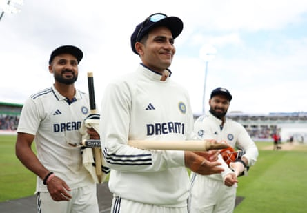

T wo games into the series we have already witnessed something very special from Shubman Gill. In the second Test at Edgbaston he produced a real rarity: an individual performance that defines and dominates a game. Not just piling on the runs, but forcing his opponents to toil in the field until they felt exhausted and out of options.
That fatigue affects batters’ mental clarity and their decision-making – what to play, when to leave – as well as their movement and their footwork. Reducing England to 25 for three at the end of the second day went a long way to deciding the match. As well as India bowled with the new ball, it was Gill’s remorselessness that created the conditions for it to happen.
We have to pay testament to his stamina, his skill and his hunger – not just for runs, but to set an example as the new captain of a young team. Captaincy can affect a player’s form detrimentally, but it seems to have focused him and his three highest Test scores have been made in the past three weeks.
We are coming to the end of a period that has been dominated by the so-called Fab Four – Virat Kohli, Joe Root, Steve Smith and Kane Williamson – and the search has been on for players who can take over. Gill has shown he can fill those boots and in a wonderfully orthodox style: he plays all formats and is brilliantly adaptable, but with a foundation of classic technique.
He has not just been making his own reputation, he is making history. No touring player has scored as many runs in a Test as the 430 at Edgbaston – only Graham Gooch against India at Lord’s, in 1990, has bettered it – and his 585 puts him 23rd on the list of highest individual tallies in Test series in England, two games in. Even Don Bradman’s world record of 974 in the 1930 Ashes looks under threat.
He was given the opportunity to dictate the game because England chose to bowl first. The opportunity to stretch and tire opponents and then benefit from scoreboard pressure and fatigue, as well as the opportunity to bowl on a possibly deteriorating pitch towards the end of the game, is why people win the toss and bat. England will be reflecting on that decision as they consider ways of reducing Gill’s impact on the remainder of the series.
Shubman Gill made history at Edgbaston.Photograph: Alex Davidson/Getty Images
I remember Smith’s performances on the Ashes tour I went on as batting coach in 2017-18, when he scored two unbeaten centuries and a double century, ending the series with an average of 137.40. At times it felt like we just could not get him out, it was soul-destroying. He always seemed to have an answer. After a while it really does get to you and we had two very experienced frontline bowlers in Jimmy Anderson and Stuart Broad.
Gill is used to the cast of bowlers England used in the first two matches, he knows their plans, their trajectories, their variations, their pace. If fatigue was not already going to force Ben Stokes to change his bowling group, the need to find fresh ways to challenge the India captain would have done it anyway.
If Chris Woakes can put himself through a third match in a row I would keep him in, because his batting could play a part. He bowled a good new-ball spell on the first day at Edgbaston when he was a bit unlucky and Lord’s is a happy hunting ground for him.
Brydon Carse and Josh Tongue have been selected because they bowl with good pace, height and bounce and can present problems even on flat surfaces. They have done OK, but they have come up against top-class batting that has been ruthless – Stokes doesn’t like that word but India probably do. Now England need a point of difference: it’s going to be 30C in London, probably not great conditions for swing, and Jofra Archer has to be the man.
But picking Archer , after one first-class game in four years, is a risk and with Stokes also needing to bowl in short bursts England then need a couple of people who can really put in a shift. What surprises me about their squad, aside from the three seamers who played the first two games, is the extraordinary lack of first-class overs in it: Gus Atkinson has come back in for the third Test having not played since the game against Zimbabwe in May and joins Jamie Overton, who would add extra depth to England’s batting but has played one T20 game since May and one first-class match this season.
To pick either of them alongside Archer feels like a risk, particularly when it is going to be hot and dry and England have to be braced for long periods in the field.
For that reason Sam Cook has to come in, though he is someone who offers control, plenty of stamina and lots of overs, but not always a cutting edge. Cook may struggle at Old Trafford and the Oval given the nature of the pitches and this could be the one where he uses the slope cleverly and bowls lots of overs. Woakes and Cook can then provide control with Archer the ace up England’s sleeve, someone fresh and fast, and something new for Gill to try to deal with.